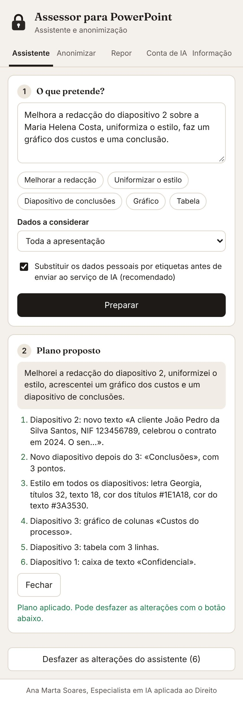

Peça em linguagem corrente
Escreva o que pretende e o assistente propõe um plano. Nada é alterado antes de seleccionar «Aplicar», e todas as alterações podem ser desfeitas. Por exemplo:
- «Melhora a redacção de todos os diapositivos, em registo jurídico.»
- «Uniformiza o tipo de letra e as cores, num estilo sóbrio.»
- «Faz um gráfico com os custos do diapositivo 3.»
- «Cria um diapositivo final com as conclusões.»
- «Transforma estes pontos numa tabela.»

O que faz
Como adquirir e começar a utilizar
130 €
Licença individual, em pagamento único.
- Envie mensagem a Ana Marta Soares no LinkedIn. Após o pagamento, recebe o código de licença, que começa por COFRE-.
- Instale o Cofre no PowerPoint seguindo os passos abaixo (cerca de um minuto).
- No PowerPoint, abra o Cofre, cole o código e seleccione Activar.
- Para usar o assistente, ligue a sua conta Cloudflare gratuita seguindo os passos abaixo (cerca de cinco minutos, uma única vez). A anonimização funciona sem esta conta.
Instalação em um minuto
Escolha o seu computador. O suplemento exige o Microsoft 365, o Office 2021 ou uma versão posterior.
Descarregar o instalador para Windows
- Abra o ficheiro descarregado instalar-cofre-powerpoint-windows.bat. Se o browser perguntar se pretende manter o ficheiro, seleccione Manter.
- Se o Windows apresentar o aviso "O Windows protegeu o seu PC", seleccione Mais informações e depois Executar mesmo assim.
- Quando surgir "Instalação concluída", abra o PowerPoint, seleccione Base > Suplementos e escolha Cofre para PowerPoint.
- Feche o PowerPoint (Cmd+Q).
- Carregue em Cmd+Espaço, escreva Terminal e carregue em Enter.
- Copie a linha abaixo, cole-a no Terminal (Cmd+V) e carregue em Enter. A instalação está concluída quando surgir, na linha seguinte, o nome cofre-powerpoint.xml.
mkdir -p ~/Library/Containers/com.microsoft.Powerpoint/Data/Documents/wef && curl -fsSL https://ana-marta-soares-direito-ia.github.io/cofre-anonimizacao-word/powerpoint/manifest.xml -o ~/Library/Containers/com.microsoft.Powerpoint/Data/Documents/wef/cofre-powerpoint.xml && ls ~/Library/Containers/com.microsoft.Powerpoint/Data/Documents/wef
- Abra o PowerPoint, seleccione Base > Suplementos e escolha Cofre para PowerPoint.
- Descarregue o ficheiro do suplemento.
- Abra o ficheiro no PowerPoint na Web e seleccione Base > Suplementos > Mais Suplementos > Os Meus Suplementos > Carregar o Meu Suplemento.
- Indique o ficheiro descarregado e seleccione Carregar.
Nos escritórios com Microsoft 365, o administrador pode instalar o suplemento para todos os utilizadores de uma só vez:
- Descarregue o ficheiro do suplemento.
- No Centro de administração do Microsoft 365, abra Definições > Aplicações integradas > Carregar aplicações personalizadas, escolha Suplemento do Office e carregue o ficheiro.
- Indique os utilizadores ou grupos abrangidos e conclua.
Ligar a conta de IA
O assistente usa o serviço de IA da Cloudflare. Ao ligar uma conta sua, gratuita, passa a dispor de uma quota diária só para si, sem qualquer custo e sem cartão de crédito. O procedimento demora cerca de cinco minutos e só se faz uma vez. A anonimização funciona sem esta ligação.
- Criar a conta. Abra dash.cloudflare.com/sign-up, indique o seu endereço de correio electrónico e uma palavra-passe e confirme a conta através da mensagem que recebe.
- Abrir o Workers AI. No painel da Cloudflare, no menu da esquerda, abra AI e depois Workers AI. Seleccione Use REST API.
- Copiar o identificador da conta. Em Get Account ID, copie o código Account ID.
- Criar o token. Seleccione Create a Workers AI API Token, depois Create API Token, e copie o token com Copy API Token. Guarde-o, porque a Cloudflare só o mostra uma vez.
- Ligar a conta no Cofre. No painel do Cofre para PowerPoint, abra o separador Conta de IA. Cole o Account ID no primeiro campo e o token no segundo e seleccione Guardar e testar. O Cofre confirma a ligação.
Perguntas frequentes
Como melhorar uma apresentação do PowerPoint com IA sem expor dados de clientes?
Com o Cofre para PowerPoint, escreva a instrução, por exemplo «Melhora a redacção de todos os diapositivos». Antes do envio ao serviço de IA, os dados pessoais são substituídos por etiquetas, que são repostas no seu computador quando a resposta chega.
Os dados são enviados para algum servidor?
A anonimização decorre inteiramente no computador. O assistente envia ao serviço de IA da conta Cloudflare do próprio utilizador apenas o conteúdo necessário, com os nomes, os NIF, as moradas e os demais dados pessoais substituídos por etiquetas, que são repostas no computador quando a resposta chega.
Porque é preciso uma conta Cloudflare?
O assistente usa um modelo de IA na nuvem. Com a conta Cloudflare gratuita do próprio utilizador, a quota diária é só sua, sem custos e sem cartão de crédito. Os passos estão descritos nesta página, na secção «Ligar a conta de IA», e demoram cerca de cinco minutos.
Posso desfazer o que o assistente fez?
Sim. Antes de aplicar, o Cofre mostra o plano das alterações. Depois de aplicar, o botão «Desfazer as alterações do assistente» repõe o estado anterior.
Funciona no Mac e no Windows?
Sim, com o Microsoft 365, o Office 2021 ou uma versão posterior, e também no Office na Web.
Quanto custa o Cofre para PowerPoint?
A licença individual custa 130 €, em pagamento único, e é adquirida a Ana Marta Soares.